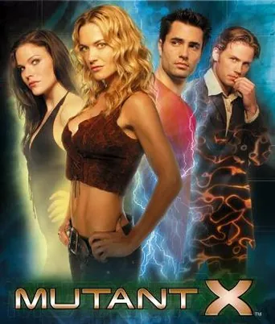

The genetics
Genetic engineering is the premise of the series: every new mutant owes his or her powers to the experiments of Genomex, described as covert and government-backed, and categories such as "feral", "molecular" or "elemental" mutants reflect the different kinds of genetic manipulation they received. Some carry recombined human and animal DNA, and the new mutants live with medical problems derived from the procedures; Jesse is said to be the only one to have outlived his "expiration date". The show offers two contrasting portraits of geneticists. Adam Kane is a repentant creator who turns his knowledge to caring for his creations, looking for treatments for their conditions; Eckhart and the Genetic Security Agency represent the institution that wants to keep them under control, and other scientists, such as a biogeneticist recruited to make a mind-controlling toxin, serve those aims. The series is action-adventure in the mould of X-Men, and its genetics is fantasy, but its theme of people harmed by secret medical experiments and then treated as a threat gives the show its moral frame.
The story
Mutant X follows a team of "new mutants", people with extraordinary powers who were used as test subjects in covert genetic experiments run by Genomex. Their leader, Adam Kane, was the chief bio-geneticist behind those experiments and formed Mutant X to atone for his mistakes; he uses a stolen database to find other new mutants, protect them and help them control their powers. The original team includes Jesse Kilmartin, who can change his body's density; Shalimar Fox, a "feline feral" with combined human and animal DNA; the empath Emma DeLauro; and Brennan Mulwray, who generates electricity. Their main enemy is Mason Eckhart, Genomex's former security chief, who heads the Genetic Security Agency and hunts new mutants to control them. Another adversary is Gabriel Ashlocke, the psychopathic "patient zero" of the experiments. The series ran for three seasons, from 2001 to 2004, and was cancelled abruptly, ending on a cliffhanger.